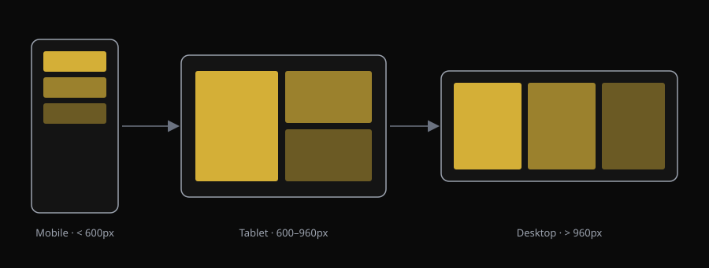

Designing for Every Screen
A layout that only looks right on a laptop is an incomplete layout. This module ties together the box model and Flexbox from Module 04 with media queries to build pages that adapt to any screen width.
What you will learn
Explain what a breakpoint is and why it matters.
Write a media query to change styles at a given width.
Combine Flexbox with media queries for adaptive layouts.
Use the viewport meta tag correctly.
Test a layout at multiple screen widths using browser dev tools.
Use AI to reason about which breakpoints a design actually needs.
Responding to Screen Width
.cards {
display: flex;
flex-direction: column;
}
@media (min-width: 768px) {
.cards {
flex-direction: row;
}
}
Verifying a Layout Works
A responsive layout has to be tested, not just written. Browser developer tools let you simulate common device widths directly.
Without this meta tag, mobile browsers will render the page at desktop width and then shrink it — media queries will not behave correctly.
Use AI to Reason About Breakpoints
Decide where breakpoints belong
Try this prompt
I have a three-column card layout. Explain how I should decide where to place my media query breakpoints, based on my content rather than fixed device sizes. Do not write the CSS for me.
Verify
- Resize the browser slowly and note where the layout starts to look cramped.
- Place the breakpoint at that content-based width, not a device name.
- Re-test after adding the media query.
Make a Layout Fully Responsive
Use AI to review your breakpoints
Ask AI to evaluate, not rewrite
Here is my CSS with one media query breakpoint at 768px. Tell me what might break between mobile and that breakpoint, and whether I'm missing an intermediate size. Do not rewrite my CSS.
Your goal
Be able to demonstrate, live in the browser, that the layout holds up at the widths AI flagged as risky.
Module Knowledge Check
What does the viewport meta tag primarily control?
The final quiz will be implemented as a Canvas Quiz rather than as part of this informational page.
Think About Your Process
Can I explain what a breakpoint is in my own words?
Can I write a media query that changes layout direction?
Can I test a layout at multiple widths without guessing?
Can I decide where a breakpoint belongs based on content, not AI defaults?